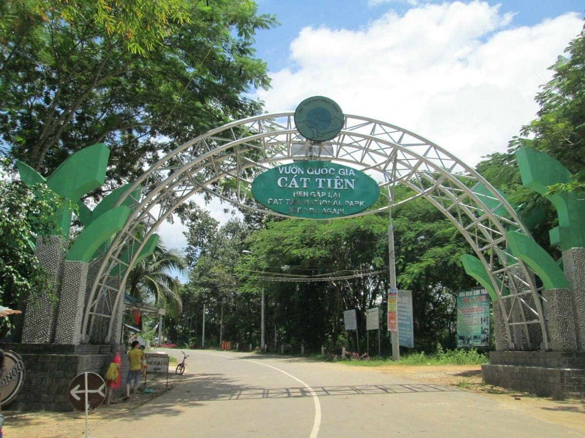

1. Tổng quan
- Vườn quốc gia Nam Cát Tiên nằm trên địa phận 3 tỉnh: Đồng Nai, Lâm Đồng, Bình Phước, cách TP Hồ Chí Minh 150 km. Với đặc trưng là rừng ẩm nhiệt đới, hệ sinh thái tại đây vô cùng phong phú, địa hình đa dạng với cánh rừng nguyên sinh rộng lớn và những cây cổ thụ độc đáo. Cây xanh chiếm hơn 50% diện tích của rừng Nam Cát Tiên, 40% là rừng tre và 10% còn lại là nông trại.
- Rừng Nam Cát Tiên là môi trường sống của nhiều loài động vật như gấu ngựa, gấu chó, bò tót, voi, chà vá chân đen, hoẵng… Các loài chim như: Vịt trời cánh trắng, đại bàng đen, chim mỏ sừng lớn… Đây cũng là nơi cư ngụ của hơn 40 loài nằm trong Sách đỏ thế giới, trong đó đặc biệt nhất là loài tê giác một sừng.
- Thời điểm đẹp nhất để khám phá rừng Nam Cát Tiên là từ tháng 12 đến tháng 5 năm sau, lúc này trời ít mưa, rừng khô ráo thuận tiện cho việc di chuyển.

2. Lịch sử hình thành
-Trước 1975: Trong thời kỳ chiến tranh, vùng đất Vườn Quốc Gia Cát Tiên hiện hữu ngày nay là một phần của chiến trường Đ rộng lớn, cũng gánh chịu bom đạn, nhưng may mắn rừng đã không bị tàn phá nhiều. Do vậy, tính nguyên sinh của rừng còn như nguyên vẹn.
-1975: Chính quyền bắt đầu tiếp quản : Sau ngày thống nhất đất nước, rừng được Bộ Quốc phòng tiếp quản và giao cho Sư đoàn 600 quản lý
-1976: Đưa vào diện bảo tồn : Nơi đây đã được chính phủ đưa vào diện bảo tồn.
-7/7/1978: Thành lập rừng cấm : Khu rừng được Chính phủ quyết định trở thành rừng cấm với diện tích 31,000 ha, nằm trên địa phận huyện Tân Phú, tỉnh Đồng Nai.
-1986: Tỉnh Đồng Nai thành lập Ban quản lý Rừng cấm Nam Cát Tiên. Toàn bộ Sư đoàn 600 rút khỏi khu bảo tồn.
-13/01/1992: Thành lập VQG Cát Tiên : Chủ tịch Hội đồng Bộ Trưởng ra quyết định thành lập VQG Cát Tiên.
-02/1998: Trực thuộc Bộ NN&PTNT : VQG Cát Tiên được chuyển giao cho Bộ Nông nghiệp & Phát triển nông thôn quản lý. Diện tích Vườn được nâng lên là 73,878 ha.
-10/11/2001: Công nhận Khu dự trữ sinh quyển
3. Vị trí địa lí
- Diện tích Vườn quốc gia Cát Tiên :nằm ở trên địa bàn của ba tỉnh Lâm Đồng, Đồng Nai và Hình Phước với tổng diện tích là 73.878 ha. Cây xanh chiếm hơn 50% diện tích của rừng Nam Cát Tiên, 40% là rừng tre và 10% còn lại là nông trại
- Khí hậu: Vườn quốc gia Nam Cát Tiên khí hậu nhiệt đới gió mùa với hai mùa rõ rệt (mùa mưa và mùa khô) vào những ngày mưa, thời tiết mát rượi nhờ những cơn mưa lật phá nhưng lại khiến cho chuyến đi có khỏi đầu dễ chịu. Bìa rừng được bao quanh bởi sống Đồng Nai nên khí hậu nơi đây khá ôn hòa, mát mẽ Là một trong những khu rừng mưa nhiệt đới lớn nhất Việt Nam
- Phần nằm trên địa bàn Đạ Huoai (Cát Tiên cũ) và Bảo Lâm (Bảo Lộc cũ) thường được gọi là khu vực Cát Lộc. Khu vực này dành để bảo tồn loài tê giác. Phần trên địa bàn Tân Phú và Vĩnh Cửu thường được gọi là khu vực Nam Cát Tiên. Khu vực này có khoảng chục vùng đất ngập nước như Bàu Sấu (rộng 5-7 hecta thuộc huyện Tân Phú), Bàu Chim (50-100 hecta), Bàu Cá, Bàu Đắc Lớ, Trảng Cò,... Bàu Sấu còn là tên gọi chung cho toàn bộ các vùng đất ngập nước rộng khoảng 137,60 km² (trong đó 1,5 km² ngập nước thường xuyên, 53,6 km² ngập nước theo mùa, và phần còn lại có độ cao tuyệt đối không quá 125m) ở Nam Cát Tiên.
4. Tài nguyên thiên nhiên
Vườn quốc gia Cát Tiên được đánh giá cao về tiềm năng đa dạng sinh học với hàng ngàn động, thực vật bậc cao, quý hiếm. Đây là 1 trong 8 khu dự trữ sinh quyển thế giới của Việt Nam được tổ chức UNESCO công nhận.
+) Vườn được mệnh danh là “ngôi nhà của muôn thú” với 96 loài thú, 94 loài bò sát, 903 côn trùng. Hiện vườn có hơn 20 cá thể voi sinh sống.
+) Vườn quốc gia Cát Tiên có 343 loài chim, tựa như “đất nước thu nhỏ” của loài chim rừng, chiếm hơn 40% tổng loài chim của Việt Nam, được Trung tâm Cứu hộ, bảo tồn và phát triển sinh vật tiếp nhận từ người dân về nuôi dưỡng, tái thả về rừng tự nhiên khi đủ điều kiện
+) Tại Vườn quốc gia Cát Tiên có 55 cá thể gấu được tổ chức Free The Bears tại Việt Nam cứu hộ. Đây là những cá thể tiếp nhận từ các trang trại nuôi lấy mật về chữa trị, nuôi dưỡng để sống cuộc đời còn lại an toàn và hạnh phúc.
Chính sự đa dạng sinh học, nơi đây được mệnh danh là “ngôi nhà của muôn thú”. Tại đây, đang có gần 100 loài thú, 94 loài bò sát, 903 côn trùng và hàng trăm loài gỗ quý. Đến với VQG Cát Tiên, du khách sẽ được tận mắt khám phá các loài động vật hoang dã quý hiếm trong Sách đỏ như voi, vọoc, bò tót, tê tê, culi, vượn đen má vàng, hươu, nai, chồn… cùng hàng trăm loài chim.
5. Dịch vụ
a) Giá vé
Vườn Quốc gia Nam Cát Tiên là một điểm đến lý tưởng cho những ai yêu thích khám phá thiên nhiên với hệ sinh thái đa dạng và phong phú. Dưới đây là thông tin về giá vé tham quan và các dịch vụ tại vườn:
- Giá vé vào cổng:
Người lớn (từ 16 tuổi trở lên): 60.000 VNĐ/người.
Sinh viên (có thẻ hoặc giấy giới thiệu của trường): 20.000 VNĐ/người.
Học sinh, trẻ em (dưới 16 tuổi): 10.000 VNĐ/người.
Lưu ý: Vé vào cổng bao gồm một lượt phà đưa vào và đón ra khỏi vườn, nhưng không bao gồm các dịch vụ khác.
- Các dịch vụ tham quan và trải nghiệm:
+ Bảo tàng thiên nhiên:
Người lớn: 20.000 VNĐ/người.
Trẻ em dưới 15 tuổi: 10.000 VNĐ/người.
+ Trung tâm cứu hộ động vật hoang dã:
Người lớn: 30.000 VNĐ/người.
Trẻ em dưới 15 tuổi: 15.000 VNĐ/người.
+ Tham quan Bàu Sấu:
Vé tham quan: 140.000 VNĐ/người.
+ Phương tiện di chuyển:
Thuê xe jeep: 500.000 VNĐ/chuyến khứ hồi (cho 4-6 người).
Thuê xe đạp: 30.000 VNĐ/giờ.
+ Khám phá Đảo Tiên (Trạm cứu hộ gấu):
Người lớn: 40.000 VNĐ/người.
Trẻ em và người cao tuổi: 20.000 VNĐ/người.
+ Trải nghiệm xem thú đêm hoang dã:
Người lớn: 150.000 VNĐ/người (tối thiểu 4 khách).
Trẻ em dưới 15 tuổi: 75.000 VNĐ/người.
Lưu ý: Giá vé có thể thay đổi theo thời gian, vì vậy bạn nên liên hệ trực tiếp với vườn quốc gia để cập nhật thông tin chính xác nhất trước khi lên kế hoạch tham quan.
b) Dịch vụ
-Vườn quốc gia Cát Tiên cung cấp các dịch vụ: khách sạn, cắm trại, nhà hàng, tham quan rừng bằng ôtô mui trần chuyên dụng, xe đạp địa hình, hướng dẫn viên địa phương.
-Vé vào vườn đã bao gồm thuyền phà đưa vào vườn và đón về. Giá vé người lớn (16 tuổi trở lên): 60.000 đồng. Vé sinh viên (có thẻ hoặc giấy giới thiệu của trường): 20.000 đồng. Học sinh, trẻ em (dưới 16 tuổi): 10.000 đồng
-Ngoài ra tại vườn quốc gia Cát Tiên còn có các dịch vụ như thuê sân khấu, hội nghị, hội họp, dịch vụ vận chuyển phương tiện.
-Vườn quốc gia Cát Tiên có các dịch vụ lưu trú ở hai khu vực là trung tâm vườn và Bàu Sấu (cách trung tâm 14 km). Phòng ở dao động từ 400.000 đồng đến 1,6 triệu đồng một đêm cho phòng hai đến bốn người. Phòng dorm tám người giá 800.000 đồng. Giá phòng không bao gồm ăn sáng, phí tham quan và các dịch vụ khác, giảm 20% trong các tháng từ 6 đến 10. Có phụ thu nếu ở quá số lượng người.
-Phía bên ngoài vườn còn có các homestay như Orchard Home Resort và Nam Cát Tiên homestay. Du khách còn có thể cắm trại tại khu vực trung tâm vườn, 100.000 đồng một người (tự chuẩn bị lều trại).
-Vườn quốc gia Cát Tiên cung cấp các dịch vụ ăn uống tại nhà hàng Cây Dầu và nhà hàng Tre Vàng. Ngoài ra tại khu vực Bàu Sấu có dịch vụ ăn tối với 120.000 đồng một suất, ăn sáng 30.000 đồng một suất.
-Nhà hàng Tre Vàng có sức chứa 100 khách, phục vụ các món ăn Âu, Á theo yêu cầu. Nhà hàng Cây Dầu có sức chứa 150 chỗ, chia thành hai khu vực gồm sảnh nhìn ra khuôn viên cây xanh và bên trong nhà. Nhà hàng nằm gần khu cắm trại nên thuận tiện cho du khách, các đoàn tổ chức team building, gala dinner. Du khách có thể đặt đồ ăn tối và đêm rồi ship về sân trại.
Viện bảo tàng VQG Nam Cát Tiên
Nhà hàng - Nơi du khách thưởng thức các món ăn độc đáo rừng sâu
Khu vực cắm trại

Trạm kiểm lâm
c) Những nơi được tham quan
-Du khách di chuyển bằng ôtô, kết hợp đi bộ 100-300 m tại mỗi điểm. Các nhóm tùy chọn, tối đa 20 người. Khoảng cách mỗi điểm dao động từ 3 km đến 16 km.
-Có 6 tuyến tham quan, mỗi tuyến được thiết kế với những điểm đến tùy chọn, bao gồm: Cây Tung – ghềnh Bến Cự - Cây gõ Bác Đồng – Cây đa Lộc giao – Thác Trời – Rừng Bằng Lăng Đà Cộ - ghềnh Bến Cự - Hồ Cây si Trăm thân (điểm duy nhất có thể tắm, bơi tùy thời điểm) – làng dân tộc – cánh đồng lúa Tà Lài.
Tuyến Bàu Sấu - VQG Nam Cát Tiên
Thác trời
Ghềnh đá Bến Cự
Rừng bằng lăng Đà Cộ
Đóng góp ý kiến
Thông tin nhóm: Nhóm 4 - Lớp 12D3
Năm học: 2024-2025
Email: Groupto412D3@gamil.com
Danh sách phân công